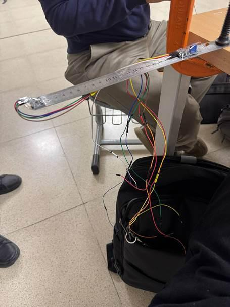
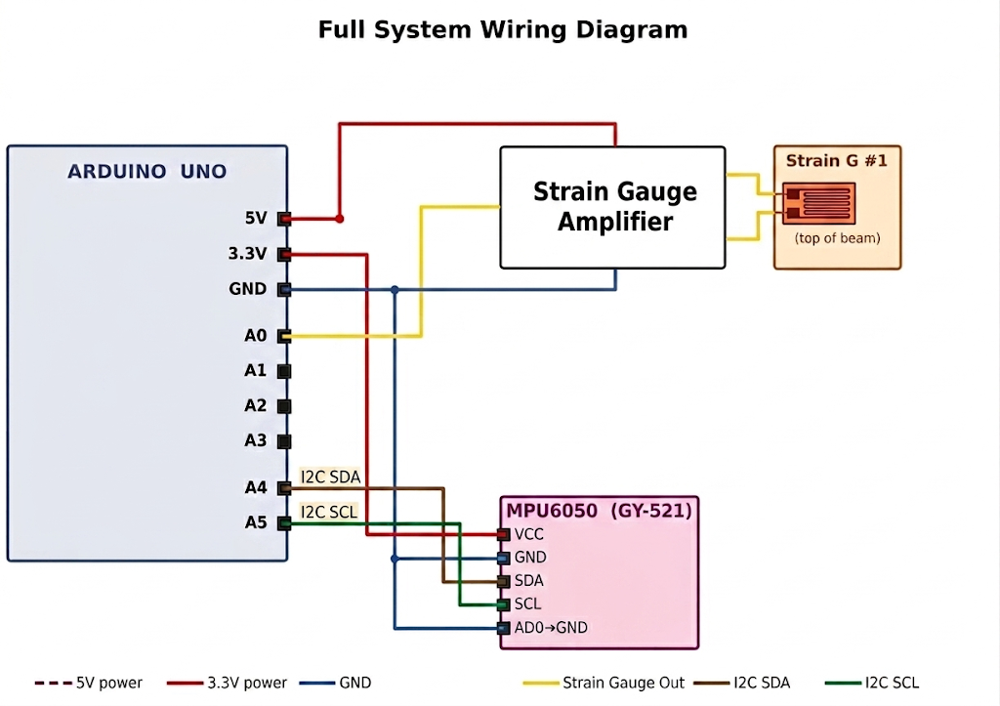
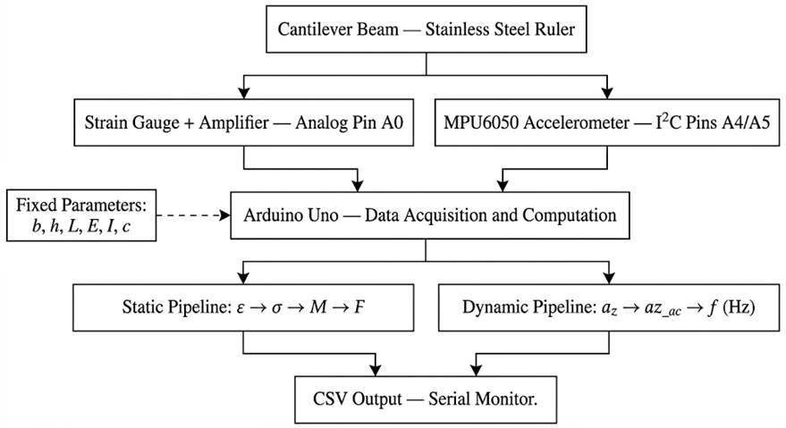
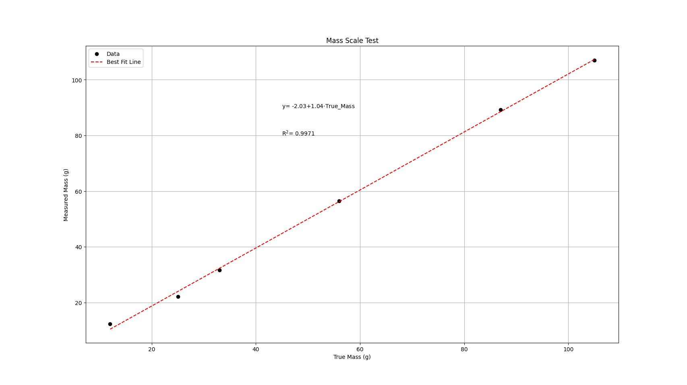
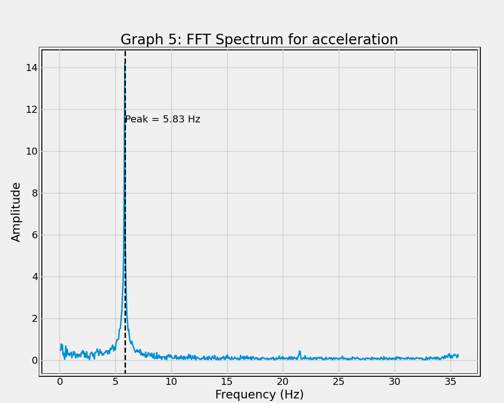

The Problem
Beam analysis is taught on paper — fixed parameters (area, moment of inertia, modulus, length) get plugged into equations to predict stress and deflection. But the loads a real structure sees are a varying quantity, and that gap is where unsafe designs hide. This rig closes the gap: a non-destructive monitor that reads what's happening inside a loaded cantilever in real time, from internal strain all the way out to the applied load.
The Setup
A 300 mm stainless-steel ruler is clamped to a bench with 30 mm fixed, leaving a ~270 mm cantilever (25 mm wide, ~1 mm thick). Steel was chosen for its known elastic behaviour and a clean, calculable moment of inertia (I ≈ 2.15×10⁻¹² m⁴, E = 200 GPa).

Strain — single gauge + amplifier, near the fixed end
A gauge (factor 2) is super-glued to a sanded patch close to the clamp, oriented along the beam axis where the bending moment — and therefore the strain — is greatest. Its amplifier module is zeroed to a 2.5 V rest output, which the firmware subtracts so the strain reading is centred at zero.
Vibration — MPU6050 at the free end, over I²C
An MPU6050 accelerometer is taped to the free tip, where the dynamic amplitude is largest. The Arduino UNO polls its z-axis over I²C and streams time, acceleration, and raw strain over serial at 115200 baud, ~100 samples/second, into a CSV pipeline.


From Strain to Mass
A Python script reads the serial stream live and walks the measurement down a physical pipeline — each step a textbook relation, chained end to end:
ε = (raw − offset) / K → σ = E·ε → M = σ·I / c → F = M / L → m = F / g
The one experimental unknown is K, the gauge's sensitivity. It was found by hanging a known 45 g reference, computing the theoretical strain for that case, and tuning K until measured and theoretical matched — settling at K = 0.84. After that, the rig reports strain, stress, bending moment, applied force, and mass for any load, live.
Results
Validated as a scale against known masses up to ~105 g, the device tracks true mass almost one-to-one (slope 1.04, R² = 0.997) with an RMSE of ~1.5 g. The small constant offset is systematic — strain-gauge hysteresis — not random scatter.

Tapping the free end excites the beam's first bending mode. Running an FFT on the acceleration ring-down gives a single dominant peak at 5.83 Hz — the measured natural frequency, a fingerprint of the beam's stiffness and mass.

Simulation & Honest Limits
The captured strain data also drives a VPython animation that reconstructs the beam's deflected shape from the elastic-curve equation (point load plus the beam's own distributed weight), so the model can be watched bending against the real readings. The main error source is honest to report: the math assumes a point load at the tip, so an object with a wide base acts as a distributed load and skews the estimate. Planned next steps — real-time deflection readout, damping-rate extraction, and a second gauge for thermal compensation.